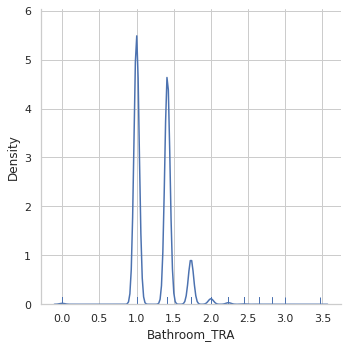
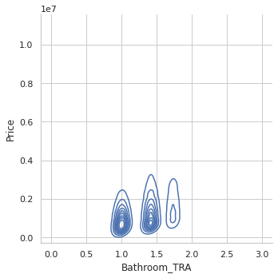
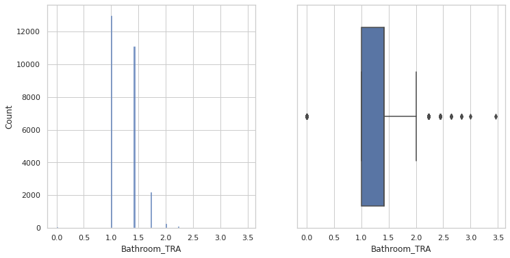
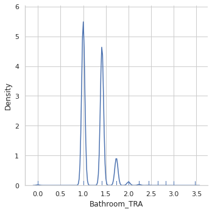
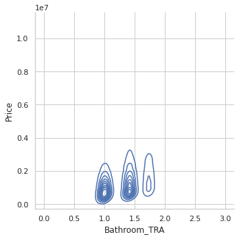
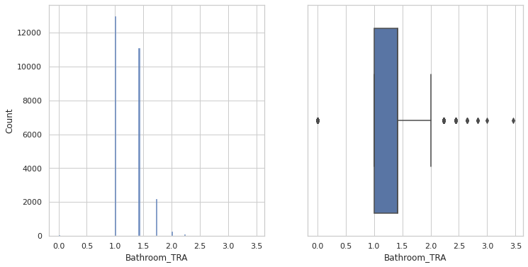

3. Análisis Variables Cuantitativas¶
import pandas as pd
import numpy as np
import math
from scipy import stats
pd.options.mode.chained_assignment = None # default='warn'
from plotnine import ggplot, aes, geom_line, geom_point, geom_bar, geom_boxplot
#dataframe = pd.read_csv('/home/ruben/Fundamentos-de-Analisis-de-DAtos-I/Practica/Melbourne_housing_FULL.csv')
import scipy.stats as ss
import matplotlib.pyplot as plot
import seaborn as sb
from seaborn import kdeplot
def quartile_skew(x):
q = x.quantile([.25, .50, .75])
return ((q[0.75] - q[0.5]) - (q[0.5] - q[0.25])) / (q[0.75] - q[0.25])
def mostrar_analisis_var_cuantitativas(data):
#calcular coeficiente de variacion
datos_variable=pd.DataFrame([{"coeficiente de Variacion":(data.std()/data.mean())*100,\
"rango de la variable":data.max() - data.min(),
"rango intercuartilico":data.quantile(0.75) - data.quantile(0.25),
"coeficiente de asimetria":quartile_skew(data)}])
return(datos_variable)
def mostrar_graf_variables_continuas(df_data,column):
sb.set_theme(style="whitegrid")
fig, (ax1,ax2) = plot.subplots(1,2,figsize=(12,6))
sb.histplot(data=df_data,x=column,ax=ax1)
sb.boxplot(data=df_data,x=column,ax=ax2)
sb.displot(data=df_data, x=column,kind="kde",rug=True)
return plot.show()
def mostrar_graf_variables_discretas(df_data,column):
sb.set_theme(style="whitegrid")
fig, (ax1,ax2) = plot.subplots(1,2,figsize=(12,6))
sb.boxplot(data=df_data,x=column,ax=ax1)
sb.countplot(data=df_data,x=column,ax=ax2)
plot.show()
#import fundamentos_datos.py
data = pd.read_csv('/home/inma/HH_intro_git_ds/Melbourne_housing_FULL.csv')
En primer lugar vamos a realizar una inspeccion ocular del dataset:
dataframe2016=dataframe[dataframe["Date"].str[-4:] =='2016']
dataframe2016.describe()
print("precio medio 2016 ",dataframe2016["Price"].mean())
dataframe2017=dataframe[dataframe["Date"].str[-4:] =='2017']
print("precio medio 2017 ",dataframe2017["Price"].mean())
dataframe2017.describe()
dataframe2018=dataframe[dataframe["Date"].str[-4:] =='2018']
print("precio medio 2018 ",dataframe2018["Price"].mean())
dataframe2017.describe()
dataframe.head()
---------------------------------------------------------------------------
NameError Traceback (most recent call last)
<ipython-input-2-660fb12ee4ba> in <module>
----> 1 dataframe2016=dataframe[dataframe["Date"].str[-4:] =='2016']
2 dataframe2016.describe()
3 print("precio medio 2016 ",dataframe2016["Price"].mean())
4 dataframe2017=dataframe[dataframe["Date"].str[-4:] =='2017']
5 print("precio medio 2017 ",dataframe2017["Price"].mean())
NameError: name 'dataframe' is not defined
Vemos que tenemos en total 21 variables algunas con aspecto de ser cualitativas y otras cuantitativas. En los próximos puntos iremos analizando las características de las mismas. Vemos en primer lugar el tipo de las variables:
dataframe.dtypes
Suburb object
Address object
Rooms int64
Type object
Price float64
Method object
SellerG object
Date object
Distance float64
Postcode float64
Bedroom2 float64
Bathroom float64
Car float64
Landsize float64
BuildingArea float64
YearBuilt float64
CouncilArea object
Lattitude float64
Longtitude float64
Regionname object
Propertycount float64
dtype: object
aux=pd.DataFrame({"Suburb":pd.value_counts(dataframe['Suburb']),"Method":pd.value_counts(dataframe['Method']),\
"Regionname":pd.value_counts(dataframe['Regionname']),"SellerG":pd.value_counts(dataframe['SellerG']),\
"Method":pd.value_counts(dataframe['Method']),"CouncilArea":pd.value_counts(dataframe['CouncilArea'])})
aux
| Suburb | Method | Regionname | SellerG | CouncilArea | |
|---|---|---|---|---|---|
| @Realty | NaN | NaN | NaN | 12.0 | NaN |
| A | NaN | NaN | NaN | 1.0 | NaN |
| AIME | NaN | NaN | NaN | 1.0 | NaN |
| ASL | NaN | NaN | NaN | 5.0 | NaN |
| Abbotsford | 137.0 | NaN | NaN | NaN | NaN |
| ... | ... | ... | ... | ... | ... |
| iProperty | NaN | NaN | NaN | 1.0 | NaN |
| iSell | NaN | NaN | NaN | 32.0 | NaN |
| iTRAK | NaN | NaN | NaN | 33.0 | NaN |
| viewbank | 1.0 | NaN | NaN | NaN | NaN |
| voglwalpole | NaN | NaN | NaN | 2.0 | NaN |
785 rows × 5 columns
print(dataframe.describe())
aux=pd.DataFrame({"Suburb":dataframe["Suburb"].describe(),"CouncilArea":dataframe["CouncilArea"].describe(),\
"Regionname":dataframe["Regionname"].describe(),"SellerG":dataframe["SellerG"].describe(),\
"Method":dataframe["Method"].describe()})
aux
Rooms Price Distance Postcode Bedroom2 \
count 34857.000000 2.724700e+04 34856.000000 34856.000000 26640.000000
mean 3.031012 1.050173e+06 11.184929 3116.062859 3.084647
std 0.969933 6.414671e+05 6.788892 109.023903 0.980690
min 1.000000 8.500000e+04 0.000000 3000.000000 0.000000
25% 2.000000 6.350000e+05 6.400000 3051.000000 2.000000
50% 3.000000 8.700000e+05 10.300000 3103.000000 3.000000
75% 4.000000 1.295000e+06 14.000000 3156.000000 4.000000
max 16.000000 1.120000e+07 48.100000 3978.000000 30.000000
Bathroom Car Landsize BuildingArea YearBuilt \
count 26631.000000 26129.000000 23047.000000 13742.00000 15551.000000
mean 1.624798 1.728845 593.598993 160.25640 1965.289885
std 0.724212 1.010771 3398.841946 401.26706 37.328178
min 0.000000 0.000000 0.000000 0.00000 1196.000000
25% 1.000000 1.000000 224.000000 102.00000 1940.000000
50% 2.000000 2.000000 521.000000 136.00000 1970.000000
75% 2.000000 2.000000 670.000000 188.00000 2000.000000
max 12.000000 26.000000 433014.000000 44515.00000 2106.000000
Lattitude Longtitude Propertycount
count 26881.000000 26881.000000 34854.000000
mean -37.810634 145.001851 7572.888306
std 0.090279 0.120169 4428.090313
min -38.190430 144.423790 83.000000
25% -37.862950 144.933500 4385.000000
50% -37.807600 145.007800 6763.000000
75% -37.754100 145.071900 10412.000000
max -37.390200 145.526350 21650.000000
| Suburb | CouncilArea | Regionname | SellerG | Method | |
|---|---|---|---|---|---|
| count | 34857 | 34854 | 34854 | 34857 | 34857 |
| unique | 351 | 33 | 8 | 388 | 9 |
| top | Reservoir | Boroondara City Council | Southern Metropolitan | Jellis | S |
| freq | 844 | 3675 | 11836 | 3359 | 19744 |
3.1 Análisis Variables Cuantitativas¶
Para cada una de las variables cualitativas del dataframe comprobaremos sus medidas de centralidad y veremos cuales de ellas tiene sentido analizar
dataframe.describe()
| Rooms | Price | Distance | Postcode | Bedroom2 | Bathroom | Car | Landsize | BuildingArea | YearBuilt | Lattitude | Longtitude | Propertycount | |
|---|---|---|---|---|---|---|---|---|---|---|---|---|---|
| count | 34857.000000 | 2.724700e+04 | 34856.000000 | 34856.000000 | 26640.000000 | 26631.000000 | 26129.000000 | 23047.000000 | 13742.00000 | 15551.000000 | 26881.000000 | 26881.000000 | 34854.000000 |
| mean | 3.031012 | 1.050173e+06 | 11.184929 | 3116.062859 | 3.084647 | 1.624798 | 1.728845 | 593.598993 | 160.25640 | 1965.289885 | -37.810634 | 145.001851 | 7572.888306 |
| std | 0.969933 | 6.414671e+05 | 6.788892 | 109.023903 | 0.980690 | 0.724212 | 1.010771 | 3398.841946 | 401.26706 | 37.328178 | 0.090279 | 0.120169 | 4428.090313 |
| min | 1.000000 | 8.500000e+04 | 0.000000 | 3000.000000 | 0.000000 | 0.000000 | 0.000000 | 0.000000 | 0.00000 | 1196.000000 | -38.190430 | 144.423790 | 83.000000 |
| 25% | 2.000000 | 6.350000e+05 | 6.400000 | 3051.000000 | 2.000000 | 1.000000 | 1.000000 | 224.000000 | 102.00000 | 1940.000000 | -37.862950 | 144.933500 | 4385.000000 |
| 50% | 3.000000 | 8.700000e+05 | 10.300000 | 3103.000000 | 3.000000 | 2.000000 | 2.000000 | 521.000000 | 136.00000 | 1970.000000 | -37.807600 | 145.007800 | 6763.000000 |
| 75% | 4.000000 | 1.295000e+06 | 14.000000 | 3156.000000 | 4.000000 | 2.000000 | 2.000000 | 670.000000 | 188.00000 | 2000.000000 | -37.754100 | 145.071900 | 10412.000000 |
| max | 16.000000 | 1.120000e+07 | 48.100000 | 3978.000000 | 30.000000 | 12.000000 | 26.000000 | 433014.000000 | 44515.00000 | 2106.000000 | -37.390200 | 145.526350 | 21650.000000 |
Tabla 3.3.1
Antes de empezar el analisis de las variables indicar que el coeficiente de asimetria empleado es el de SKEWNESS por tanto para analizar los resultados podemos usar la sigueiente funcion.
Si el coeficiente de asimetría es menor que -1 o mayor que 1, la distribución de la variable es extremadamente sesgada.
Si el coeficiente de asimetría se encuentra entre -1 y -0,5 o entre 0,5 y 1, la distribución de la variable es moderadamente sesgada.
Si el coeficiente de asimetría se encuentra entre -0,5 y 0,5, la distribución de la variable es aproximadamente sesgada.
3.3.1 Analisis de la variable Rooms¶
Esta variable contiene el número de habitaciones de cada propiedad que hay en la muesta. Como se puede ver en la tabla 3.3.1 la variable tiene valor en 34857 toma valores discretos en el rango 1 a 16 dormitorios, que es el máximo encontrado. La mitad de la muestra tiene tres habitaciones o menos y el 75% de pisos tienen entre 1 y 4 habitaciones. A continuacion vamos a ver las frecuencias de la variable
pd.value_counts(dataframe['Rooms'])/dataframe["Rooms"].count()
3 0.432739
2 0.239034
4 0.228247
5 0.049832
1 0.042431
6 0.005852
7 0.000918
8 0.000545
10 0.000172
9 0.000115
12 0.000086
16 0.000029
Name: Rooms, dtype: float64
Como se puede ver mas de un 40% de los pisos vendidos tienen 3 dormitorios que es mas del doble del porcentaje del numero de pisos que tiene 2 dormitorios (un 23%) o 4 dormitorios(un 22,8%).
Pasamos a hacer el cálculo de las medidas de dispersión y simetria calcularemos el coficiente de variación, rango, IQR y simtetria:
mostrar_analisis_var_cuantitativas(dataframe["Rooms"])
| coeficiente de Variacion | rango de la variable | rango intercuartilico | coeficiente de asimetria | |
|---|---|---|---|---|
| 0 | 32.000296 | 15 | 2.0 | 0.0 |
Como se puede var en la tabla anterio la variable tiene un coeficiente de variacion del 32% con un coeficiente de asimetria igual a 0 por que la variable es simetrica.
mostrar_graf_variables_discretas(dataframe,"Rooms")
dataframe["Rooms_TR"]=dataframe["Rooms"].apply(np.sqrt)
sb.scatterplot(data=dataframe, x="Rooms", y="Price")
#mostrar_graf_variables_continuas(dataframe_filtered,"Distance_SQR")
plot.show()
Como ya se habia comprobado numéricamente la variable es muy simetrica aunque se aprecia unos outliers, viviendas de mas de 7 dormitorios que posteriormente veremos que efecto tienen en los modelos.
A priori no parece necesario tratar de ningún modo esta variable por ser simétrica y los outliers no parecen ser error de muestra.
3.3.2 Analisis de la variable Bedroom2¶
Esta variable contiene el numero de dormitorios de cada propiedad. Como se puede ver en la tabla 3.3.1 la variable tiene valor en 26640 elementos de la muestra.Toma valores discretos en el rango 0 a 30 dormitorios, que es el máximo encontrado. La mitad de la muestra tiene tres dormitorios o menos y el 75% de pisos tienen entre 0 y 4 dormitorios. Estas cifras llaman la atencion ya que el máximo numero de habitaciones de la variable rooms tenia como maximo 16, por lo que esos datos puede que estén mal imputados.
pd.value_counts(dataframe['Bedroom2'])/dataframe["Bedroom2"].count()
3.0 0.445983
4.0 0.238288
2.0 0.216854
5.0 0.053566
1.0 0.036261
6.0 0.006306
7.0 0.001126
0.0 0.000638
8.0 0.000488
9.0 0.000188
10.0 0.000150
30.0 0.000038
12.0 0.000038
20.0 0.000038
16.0 0.000038
Name: Bedroom2, dtype: float64
Los resultados son muy parecidos a los obtenidos con la variable Rooms por lo que no es probable que la variable rooms haga referencia tambien a numero de dormitorios y no solo de habitaciones. Como ya ocurria con la variable rooms casi el 89% de las propiedades tiene entre 2 y 4 dormitorios. Vamos a verificar las medidas de dispersión y asimetria de la variable
mostrar_analisis_var_cuantitativas(dataframe["Bedroom2"])
| coeficiente de Variacion | rango de la variable | rango intercuartilico | coeficiente de asimetria | |
|---|---|---|---|---|
| 0 | 31.792606 | 30.0 | 2.0 | 0.0 |
El coeficiente de variacion es muy similar a la variable rooms y con el mismo rango intercuantilico, aunque en este caso el coficiente de asimetria es 0 lo que parece indica que se trata de una distribucion simétrica de los datos. Lo verificaremos con los siguientes diagramas:
mostrar_graf_variables_discretas(dataframe,"Bedroom2")
como ya se habia comprobado numéricamente la variable es muy simetrica aunque se aprecia unos outliers, viviendas de mas de 7 dormitorios que se deberian eliminar. También habra que seleccionar que variable es de mejor calidad para llevar a cabo el modelo.
En este caso la variable tiene un coeficiente de asimetria 0 y algún outlier que veremos posteriormente como afecta al modelo
3.3.3 Analisis de la variable Distance¶
La variable Distance indica la distancia al centro del inmbueble y toma como unidad las millas. Como se puede ver en la tabla 3.3.1 esta variable tiene valores en 34856 elementos de la muestra. La variable toma valores entre 0 y 48 millas , el 50% de los pisos de la muestra se encuentran a menos de 10,3 millas del centro de la ciudad y la desviacion tipica es 6,78. Calculamos medidas de dispersión y simetriía ya que las de centralidad las hemos visto en la tabla 3.3.1
mostrar_analisis_var_cuantitativas(dataframe["Distance"])
| coeficiente de Variacion | rango de la variable | rango intercuartilico | coeficiente de asimetria | |
|---|---|---|---|---|
| 0 | 60.696784 | 48.1 | 7.6 | -0.026316 |
segun el coeficiente la varibale parece bastante simetrica, vemaos el boxplot para cerciorarnos. Vemos la distribucion de la variable y posibles outliers
mostrar_graf_variables_continuas(dataframe,"Distance")
¿que se ve aqui?
como indica el coeficiente de asimetria , la variable es ligeramente asimetrica, vamos a intentar que se ajuste mejor a una distribucion normal
#dataframe=dataframe[dataframe["Distance"].notna()]
dataframe_filtered=dataframe[dataframe["Distance"] >0]
dataframe_filtered.reset_index(drop=True,inplace=True)
sb.scatterplot(data=dataframe, x="Distance", y="Price")
#mostrar_graf_variables_continuas(dataframe_filtered,"Distance_SQR")
plot.show()
#dataframe_filtered["Distance_TRA"]=stats.boxcox(dataframe_filtered["Distance"])[0]
dataframe["Distance_TRA"]=dataframe["Distance"].apply(np.sqrt)
#sb.displot(data=dataframe_filtered, x="Distance_TRA",y="Price")
#plot.show()
#dataframe["Distance_SQR"]=dataframe["Distance"].apply(np.sqrt)
#sb.scatterplot(data=dataframe, x="Distance", y="Price")
#plot.show()
mostrar_graf_variables_continuas(dataframe_filtered,"Distance")
¿que hacemos con esto?
¿que hacemos con esto
3.3.4 Analisis de la variable Bathrooms¶
Esta variable indica el número de baños del inmuble.Como se puede ver en la tabla 3.3.1 la variable tiene valor en 26631 elementos de la muestra. Toma valores discretos en el rango 0 a 12 dormitorios. El 75% de pisos tienen entre 0 y 2 baños . A continuacion vamos a ver las frecuencias de la variable:
pd.value_counts(dataframe['Bathroom'])/dataframe["Bathroom"].count()
1.0 0.486989
2.0 0.415456
3.0 0.081897
4.0 0.010101
5.0 0.002891
0.0 0.001727
6.0 0.000601
7.0 0.000150
8.0 0.000113
9.0 0.000038
12.0 0.000038
Name: Bathroom, dtype: float64
Como se puede ver en la tabla anterior el 89% de la muestra tiene igual o menos de dos dormitorios comn una media de 1,6 baños. En la tabla 3.3.1 respecto a las medidas de dispersión podemos ver que la desviacion típica es de 0,72 y en la siguiente tabla vemos mas variables de dispersión y asimetria:
mostrar_analisis_var_cuantitativas(dataframe["Bathroom"])
| coeficiente de Variacion | rango de la variable | rango intercuartilico | coeficiente de asimetria | |
|---|---|---|---|---|
| 0 | 44.572429 | 12.0 | 1.0 | -1.0 |
El coeficiente de variación es del 44% y el coeficiente de asimetria es -1 lo que indica que la variable es moderadamente sesgada, tiene cola a la derecha. comprobaremos esto mismo de manera visual pintando su histograma y boxplot
mostrar_graf_variables_discretas(dataframe,"Bathroom")
sb.scatterplot(data=dataframe, x="Bathroom", y="Price")
#mostrar_graf_variables_continuas(dataframe_filtered,"Distance_SQR")
plot.show()
dataframe_filtered=dataframe[(dataframe["Bathroom"]>0) & (dataframe["Bathroom"] is not None)]
dataframe["Bathroom_TRA"]=dataframe["Bathroom"].apply(np.sqrt)
#dataframe["Distance_SQR"]=dataframe["Distance"].apply(np.sqrt)
sb.scatterplot(data=dataframe, x="Bathroom_TRA", y="Price")
mostrar_graf_variables_continuas(dataframe,"Bathroom_TRA")
plot.show()
sb.displot(data=dataframe, x="Bathroom_TRA",y="Price",kind="kde")
plot.show()
#dataframe["Distance_SQR"]=dataframe["Distance"].apply(np.sqrt)
#sb.scatterplot(data=dataframe, x="Distance", y="Price")
#plot.show()
mostrar_graf_variables_continuas(dataframe,"Bathroom_TRA")
 






NI idea de que hacer con esta variable si es que hay que hacer algo…
3.3.5 Analisis de la variable Car¶
Esta variable contiene el numero de plazas de aparcamiento que tiene asociadas la vivienda. Como se puede ver en la tabla 3.3.1 la variable tiene valor en 26129 de la muestra y toma valores discretos en el rango 0 a 26 plazas de aparcamiento. El 75% de pisos tienen entre 0 y 2 plazas de aparcamiento . A continuacion vamos a ver las frecuencias de la variable:
pd.value_counts(dataframe['Car'])/dataframe["Car"].count()
2.0 0.467450
1.0 0.350721
0.0 0.062421
3.0 0.061464
4.0 0.044433
5.0 0.005779
6.0 0.005358
7.0 0.000957
8.0 0.000880
10.0 0.000230
9.0 0.000115
11.0 0.000077
26.0 0.000038
12.0 0.000038
18.0 0.000038
Name: Car, dtype: float64
como se puede ver casi el 47% de las casas de la muestra tienen dos plaza de aparcamiento y el 81% entre 1 y 2 plazas de aparcamiento.Respecto a las medidas de dispersión, en la tabla 3.3.1 podemos ver que la desviacion típica es de 1.01. En la siguiente tabla vemos mas variables de dispersión y asimetria:
mostrar_analisis_var_cuantitativas(dataframe["Car"])
| coeficiente de Variacion | rango de la variable | rango intercuartilico | coeficiente de asimetria | |
|---|---|---|---|---|
| 0 | 58.465078 | 26.0 | 1.0 | -1.0 |
como se puede ver hay un coeficiente de variación alto y asimetria por la izquierda que verificaremos mejor haciendo algunos diagramas
mostrar_graf_variables_discretas(dataframe,"Car")
sb.scatterplot(data=dataframe, x="Car", y="Price")
mostrar_graf_variables_continuas(dataframe,"Car")
plot.show()
3.3.6 Analisis de la variable Landsize¶
Esta variable contiene el tamaño del terreno asociado a la vivienda, excluye los metros de la vivienda y está calculada en metros cuadrados. La media de terreno asociado al inmbueble es de 593.598993 El 75% de pisos tienen menos de 670 metros cuadrados de parcela. A continuacion vamos a ver las frecuencias de la variable:
mostrar_analisis_var_cuantitativas(dataframe["Landsize"])
| coeficiente de Variacion | rango de la variable | rango intercuartilico | coeficiente de asimetria | |
|---|---|---|---|---|
| 0 | 572.582161 | 433014.0 | 446.0 | -0.331839 |
la variable es aproximadamente sesgada a la izquierda y con un rango de valores muy amplio.pintamos algunos gráficos para entender mejor la asimietria y la dispersión del a variablable
mostrar_graf_variables_continuas(dataframe,"Landsize")
vamos a eliminar el registro superior que está desvirtuando el gráfico para poder analizarlo con mas detalle
#Eliminamos outliers superiores para poder seguir analizando
df_filtered=dataframe[dataframe["Landsize"]<20000]
print("registros filtrado = ",(dataframe["Landsize"].count()-df_filtered["Landsize"].count()))
mostrar_graf_variables_continuas(df_filtered,"Landsize")
sb.scatterplot(data=df_filtered, x="Landsize", y="Price")
#mostrar_graf_variables_continuas(dataframe_filtered,"Distance_SQR")
plot.show()
registros filtrado = 23
Continua habiendo outliers que hacen que la variabe sea muy dispersa por lo que la variable es clara condidata a ser transformada
#dataframe=dataframe[dataframe["Distance"].notna()]
dataframe_filtered=dataframe[(dataframe["Landsize"]>0) ]
#dataframe_filtered.reset_index(drop=True,inplace=True)
#dataframe_filtered["Landsize_TRA"]=stats.boxcox(dataframe_filtered["Distance"])[0]
#dataframe_filtered["Landsize_TRA"]=dataframe_filtered["Landsize"].apply(np.sqrt)
dataframe_filtered["Landsize_TRA"]=np.log(dataframe_filtered["Landsize"])
sb.scatterplot(data=dataframe_filtered, x="Landsize_TRA", y="Price")
#mostrar_graf_variables_continuas(dataframe_filtered,"Distance_SQR")
plot.show()
#dataframe_filtered['Landsize_TRA'] = np.where(dataframe['Landsize'] >= 40000, 40000, (dataframe['Landsize']//100)*100)
#dataframe_filtered['Landsize_TRA'] = np.where(dataframe_filtered['Landsize_TRA'] <= 70, 70, dataframe_filtered['Landsize_TRA'])
sb.displot(data=dataframe_filtered, x="Landsize_TRA",y="Price")
plot.show()
#dataframe["Distance_SQR"]=dataframe["Distance"].apply(np.sqrt)
#sb.scatterplot(data=dataframe, x="Distance", y="Price")
#plot.show()
mostrar_graf_variables_continuas(dataframe_filtered,"Landsize_TRA")
3.3.7 Analisis de la variable BulldingArea¶
Esta variable contiene el el tamaño del terreno asociado a la vivienda en metros cuadrados. Como se puede ver en la tabla 3.3.1 la variable tiene valor en 13742 elementos de la muestra.La media del tamaño de los inmubles de 160.25640 y toma valores continuos en el rango 0 a 44515 . El 75% de pisos tienen menos de 188.00000 metros cuadrado. A continuacion vamos a ver las medidas de dispersión de la varibale:
mostrar_analisis_var_cuantitativas(dataframe["BuildingArea"])
| coeficiente de Variacion | rango de la variable | rango intercuartilico | coeficiente de asimetria | |
|---|---|---|---|---|
| 0 | 250.390661 | 44515.0 | 86.0 | 0.209302 |
como se puede ver la variable tiene asimetria a la derecha, pero en la tabla inicial vimos que la desviación estándar era muy alta para el valor que tomaba la media. Pasamos a comprobar visualmente la simetria
mostrar_graf_variables_continuas(dataframe,"BuildingArea")
como se puede ver hay claramente algún outlier que desvirtua la muestra (ya lo pudimos ver tambien en la tabla 3.1.1 donde la media era de 522 y el maximo era mas de 44000 metros cuadrados de parcela). Eliinamos el el maximo en cuestión y repiintamos los graficos
#Eliminamos el maximo y vemos que ocurre
df_filtered=dataframe[dataframe["BuildingArea"]<1000]
print("registros filtrado = ",(dataframe["BuildingArea"].count()-df_filtered["BuildingArea"].count()))
mostrar_graf_variables_continuas(df_filtered,"BuildingArea")
#df_filtered["BuildingArea_TRA"]=np.log(dataframe_filtered["BuildingArea"])
df_filtered["BuildingArea_TRA"]=df_filtered["Distance"].apply(np.sqrt)
sb.scatterplot(data=df_filtered, x="BuildingArea_TRA", y="Price")
#mostrar_graf_variables_continuas(dataframe_filtered,"Distance_SQR")
plot.show()
df_filtered=dataframe[dataframe["YearBuilt"]>1800]
sb.scatterplot(data=df_filtered, x="YearBuilt", y="Price")
#mostrar_graf_variables_continuas(dataframe_filtered,"Distance_SQR")
plot.show()
registros filtrado = 13
Los datos sin ese registro tienen mejor aspecto y parecen muy concentrados. Lo tendremos en cuenta cuando tratemos la variables.
3.3.8 Analisis de la variable PropertyCountss¶
Esta variable contiene el numero de viviendas existentes en el barrio. Como se puede ver en la tabla 3.3.1 la variable tiene valor en 34854 y toma valores discretos en el rango 83 a 21650(que es el maximo de viviendas en un bbarrio). El 75% de pisos están en barrios con 10412 viviendas o menos. A continuacion vamos a ver las frecuencias de la variable:
mostrar_analisis_var_cuantitativas(dataframe["Propertycount"])
| coeficiente de Variacion | rango de la variable | rango intercuartilico | coeficiente de asimetria | |
|---|---|---|---|---|
| 0 | 58.472938 | 21567.0 | 6027.0 | 0.210884 |
La variable es aproximadamente sesgada a la derecha , lo comprobaremos visalmente:
mostrar_graf_variables_continuas(dataframe,"Propertycount")
3.3.1 Analisis de la variable Price¶
ANALIZAR como cambia el tiempo
Meter el algun calculo de lat y long.